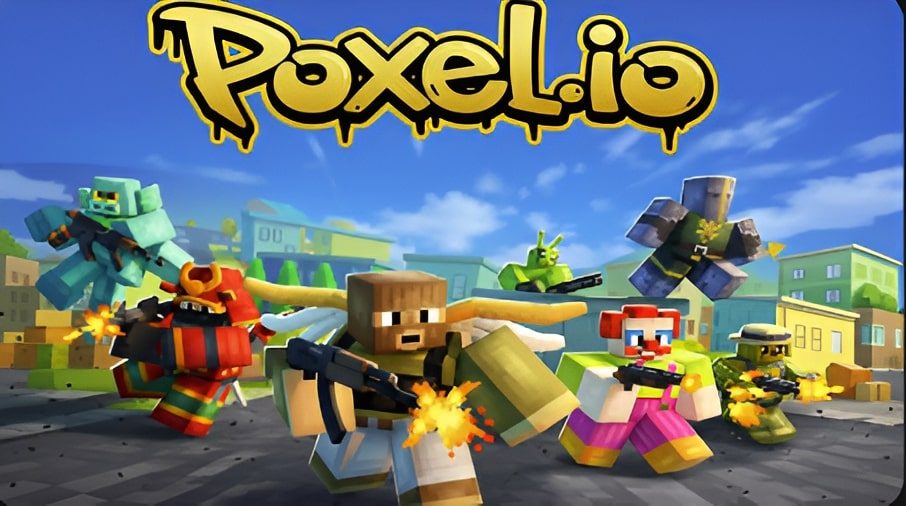
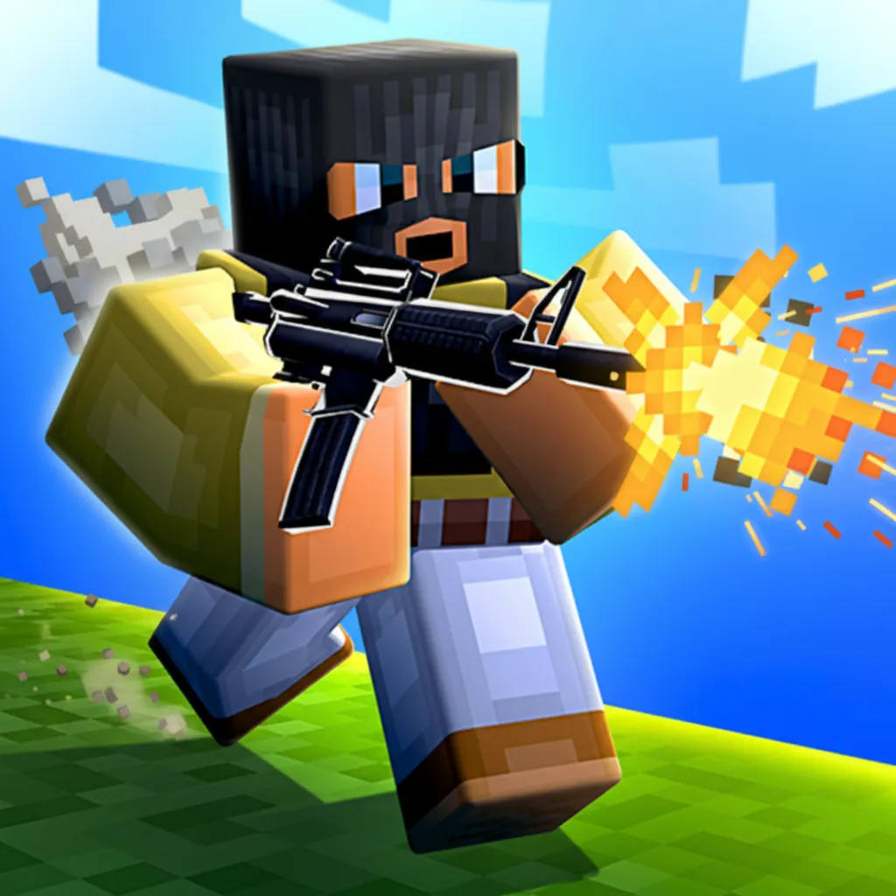
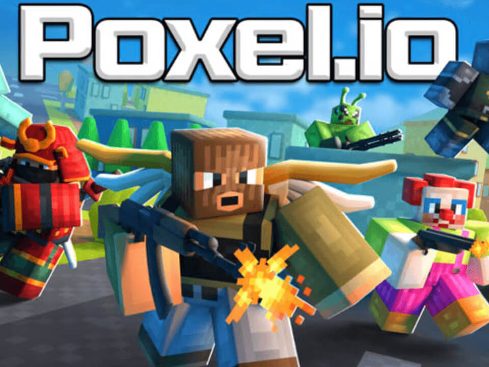

The Hard Truth About Your Poxel.io Runs
You keep spawning, dying, and staring at the leaderboard at the bottom. It is embarrassing. I have over 2000 hours in Poxel.io, and I watch newcomers make the exact same fatal errors every single match. You think you have good aim, but your game sense is completely broken. This game is a fast-paced voxel arena, and raw reflexes will not save you from terrible positioning. Stop blaming the lag. Stop blaming the weapons. The problem is you. Read these mistakes carefully, fix your habits, and maybe you will stop being free kill fodder.

| # | Mistake | Quick Fix |
|---|---|---|
| 1 | You Plant Your Feet to Shoot | Never stop moving your feet under any circumstances during a fight |
| 2 | You Push Open Ground with Close-Range Weapons | Read the map layout carefully before you engage any target |
| 3 | You Grab Power-ups Mid-Fight | Memorize the power-up spawn locations across the map to plan your rotations e... |
| 4 | You Camp the Same High Ground | Use high ground for temporary advantages, not permanent homes |
| 5 | You Refuse to Retreat When Outgunned | The moment you take heavy damage or realize you are at a disadvantage, break ... |
You Plant Your Feet to Shoot
You spot an enemy and immediately stop moving your character completely. You mistakenly think standing completely still makes your mouse aim more accurate, so you lock your WASD keys and just track the target. You freeze like a statue in the middle of the arena, completely focused on landing a perfect shot while ignoring your surroundings and the fast-paced nature of the game. This terrible habit makes you an incredibly easy target for anyone with basic tracking skills.
Poxel.io is a hyper-fast shooter where positioning is absolutely everything. A stationary target is the easiest thing to hit in the entire game. While you are busy trying to land a perfect headshot, the enemy is strafing and unloading a fast-firing close-range weapon right into your chest. You die before you even register the damage because you gave them a free, unmoving hitbox. You completely negate your own survival chances by standing still in a game built on constant movement.
Never stop moving your feet under any circumstances during a fight. Keep your WASD keys active at all times to maintain momentum. Strafe left and right continuously while you shoot to keep your opponent guessing. This makes you a moving target, drastically reducing the enemy hit probability. Your crosshair will naturally track the stationary or slower-moving opponent. Movement is your primary defense in this arena, so keep your feet dancing on the keys to survive longer.
You Push Open Ground with Close-Range Weapons
You grab a fast-firing close-range weapon and immediately push out into the middle of the map's open ground. You try to close the distance against an enemy who is already holding a long-range angle from across the arena. You completely ignore the lack of voxel cover around you and run straight into their crosshairs, expecting a different outcome. This reckless aggression shows a fundamental misunderstanding of weapon ranges and map control in this specific game.
Close-range weapons require you to stay near cover and push aggressively to succeed. In the open, you have zero protection from incoming fire. The enemy with a heavy, long-range weapon hits harder and has the massive distance advantage. They will chip away your health from a safe zone while you are completely exposed, forcing a fight you mathematically cannot win. You are essentially handing them a free elimination just because you refused to use the terrain to your advantage.
Read the map layout carefully before you engage any target. If you hold a close-range weapon, stick to the edges, use voxel blocks for cover, and push only when you can close the gap safely. If you get caught in the open, do not push forward blindly. Fall back to the nearest cover immediately to survive, heal, and reposition for a better angle. Patience and smart positioning will win you more fights than reckless rushing ever will.

You Grab Power-ups Mid-Fight
You see a shield or damage power-up spawn while you are already in a gunfight. You break your cover and sprint directly into the line of fire to grab it. You foolishly think the temporary buff will magically save you from the bullets currently tracking your head, ignoring the massive tactical disadvantage of moving out of your safe cover. This greedy decision-making process guarantees you will die right in front of the prize you wanted.
Power-ups are meant to give you an edge before the fight starts, not during an active firefight. When you break cover mid-fight to grab a spawn, you expose yourself to multiple angles. The enemy you are fighting will just track your predictable path and eliminate you while you are distracted by the pickup movement and animation, making it a fatal error. You sacrifice your actual survival just to get a temporary boost you will never even get to use.
Memorize the power-up spawn locations across the map to plan your rotations effectively. Rotate to these spots during downtime, not during active combat. Grab the shield or speed boost, let it activate, and then look for a fight. If you are low on health, retreat to a safe power-up spawn to heal and re-engage the enemy on your own terms. Securing resources safely is the key to dominating the arena without taking unnecessary risks.
You Camp the Same High Ground
You find a nice voxel block on a high ground spot with a great sightline. You get a couple of kills, so you decide to camp that exact pixel. You think you own the map and that the other players are too stupid to figure out where you are hiding, completely underestimating your opponents' adaptability and map awareness. This arrogant mindset turns you into a predictable target for the rest of the entire match.
Poxel.io players adapt incredibly quickly to static positions. If you stay in one spot, the surviving players will notice your location. They will pre-aim your exact position, push your blind spots, or coordinate to flush you out. You become a sitting duck for the entire lobby, and your survival score plummets as you get eliminated repeatedly for the rest of the match. Your initial advantage quickly becomes a massive liability because you refused to keep moving.
Use high ground for temporary advantages, not permanent homes. Take your shots, secure the kill, and immediately reposition to a different angle or drop down to new cover. Keep the enemy guessing your location at all times. If you stay mobile, they cannot pre-aim you, and you maintain the element of surprise for your next engagement, keeping your survival time high. Constant repositioning is the only way to hold high ground without getting punished for it.
You Refuse to Retreat When Outgunned
You take the first shot, miss, and immediately lose half your health. Instead of breaking line of sight, you stand your ground and try to out-shoot an enemy who has the angle, the better weapon, or full health. You stubbornly refuse to yield an inch of the map, letting your ego override basic survival instincts and tactical positioning. This foolish pride will consistently send you back to the spawn screen when you could have easily survived.
The scoring system heavily rewards how long you stay alive in the arena. Dying resets your momentum and gives the enemy points. If you are low on health or outgunned, trading shots is a mathematical loss. You will die, spawn back with nothing, and lose valuable time on the leaderboard while the enemy snowballs their advantage and dominates the match. You are actively throwing away your score just to prove a pointless point in a firefight.
The moment you take heavy damage or realize you are at a disadvantage, break line of sight immediately. Use your Shift sprint to dash behind voxel cover. Wait for your health to stabilize or grab a shield power-up. Reposition and re-engage only when you have the tactical advantage. Survival matters just as much as eliminations in this fast-paced game. Live to fight another second, and you will secure the wins you deserve.

The Bottom Line
The number one thing separating winners from losers in Poxel.io is knowing when to fight and when to run. Aim gets you kills, but movement, map awareness, and resource management keep you alive to top the leaderboard. Stop playing like a mindless bot and start playing like a tactical predator. Memorize the spawns, strafe constantly, and never take a fair fight. Drop into a match right now and apply these rules.